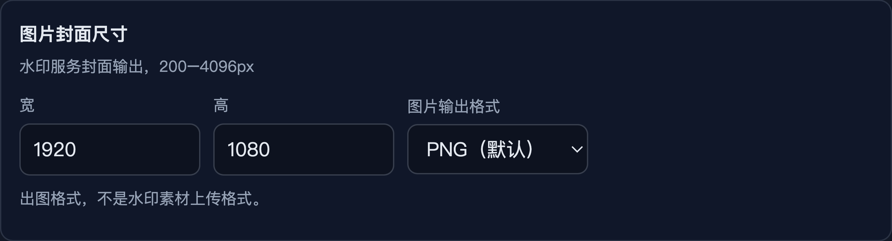
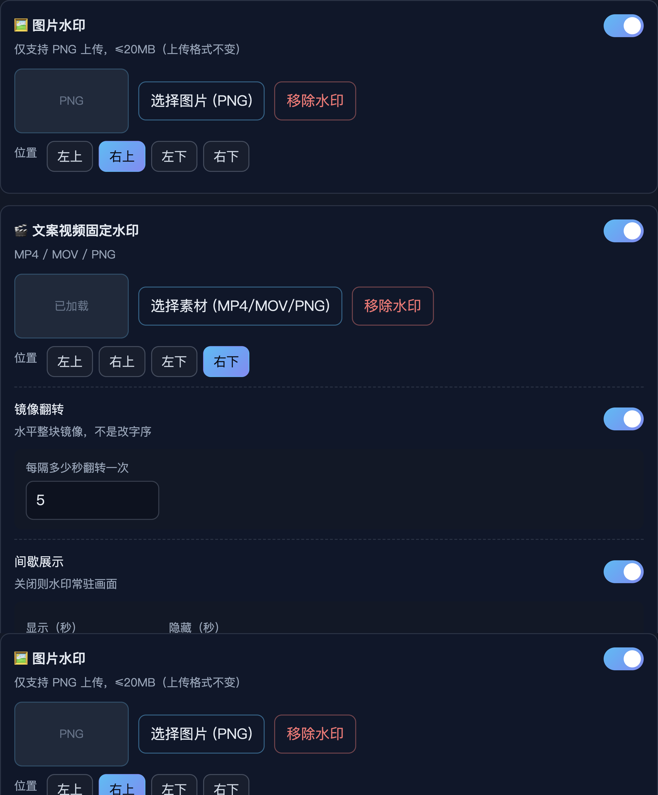
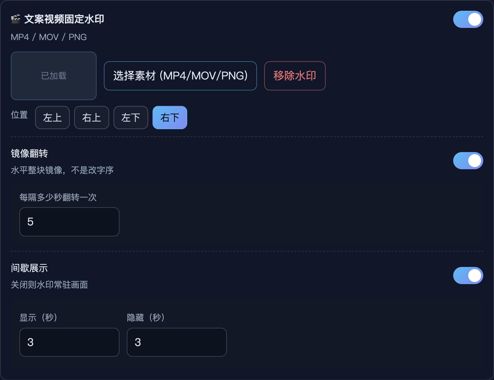
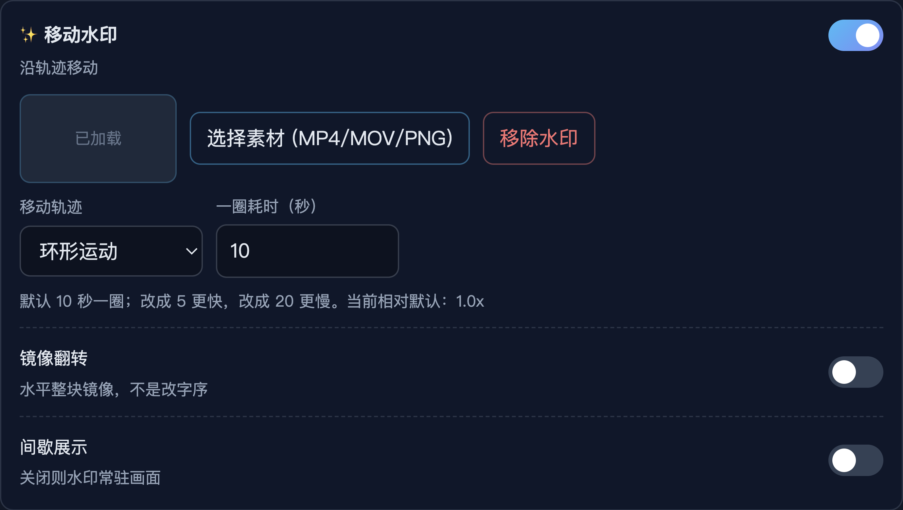
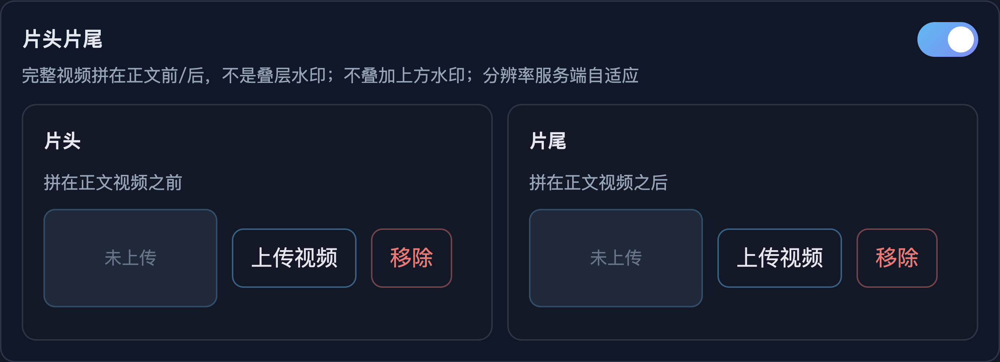

运营在「项目管理 → 编辑项目」配置水印时，现网靠「有没有上传素材」暗示是否生效，缺少明确开关；视频水印缺少镜像翻转、间歇显隐、移动速度等防盗与观感调节能力；图片经水印服务输出时固定 PNG，需要可改 JPG。
另需在成片前后拼接完整片头、片尾视频。片头片尾不是叠层水印，作为编辑项目内、水印区下方的独立模块配置。
做：仅 CMS「编辑项目」弹窗；图片输出格式；各水印启用开关；视频水印镜像翻转与间歇展示；移动水印速度；片头片尾独立模块。
不做：外站站点水印；把片头片尾算作水印类型；浏览器以外的其它入口。
前提：水印 / 成片服务已支持本 PRD 描述的全部能力，方舟配置保存后按配置生效。
| 功能ID | 模块 | 名称 | 描述 | 备注 |
|---|---|---|---|---|
| FZ-FMT-01 | 编辑项目 · 图片封面 | 图片输出格式 | 项目级输出格式可选 PNG（默认）或 JPG，作用于水印服务出图。 | 不是上传素材格式。 |
| FZ-WM-01 | 编辑项目 · 水印 | 水印启用开关 | 图片水印、固定、四角循环、移动各有独立开关；开=启用，关=未启用；关时保留素材与参数。 | 每类型最多 1 套配置；可多类型同时开。 |
| FZ-WM-02 | 编辑项目 · 视频水印 | 镜像翻转 | 固定 / 四角循环 / 移动可开镜像翻转；开后按「每隔 N 秒翻转一次」做水平整块镜像。 | 与间歇展示独立（方案甲）。 |
| FZ-WM-03 | 编辑项目 · 视频水印 | 间歇展示 | 可开间歇；配置「显示 X 秒」「隐藏 Y 秒」循环。关则常驻。 | 与镜像翻转独立。 |
| FZ-WM-04 | 编辑项目 · 移动水印 | 移动速度 | 配置一圈（一个来回）所需秒数；默认 10；数值越小越快。 | 仅移动水印。 |
| FZ-IO-01 | 编辑项目 · 片头片尾 | 片头片尾拼接 | 水印区下方独立模块；片头 / 片尾各上传完整视频；拼在正文视频前 / 后；不叠水印；分辨率服务端自适应；时长暂不限。 | 不是水印类型。 |

项目保存一套图片输出格式。水印服务按该格式输出封面等处理后的图片。与水印素材上传允许的文件类型无关。
字段随项目配置保存；转编辑 / 出图任务读取项目输出格式传给水印服务。

每种水印（图片、固定、四角循环、移动）标题行提供开关。打开表示该类型配置启用并参与压片；关闭表示未启用，不参与压片。
各类型增加 enabled 布尔；压片请求只带 enabled=true 且素材齐全的类型。

对固定 / 四角循环 / 移动水印，可开启水平整块镜像翻转（非整词换序）。开启后按配置间隔周期性在「正常朝向」与「水平镜像」之间切换。
随该水印类型配置写入；压片时交给水印服务按间隔镜像。
与 FZ-WM-02 共用截图 demo-wm-flip-intermittent.png。
开启后水印按「显示 X 秒 → 隐藏 Y 秒」循环，不再常驻画面。关闭后恢复常驻（现网默认观感）。
随类型配置保存并传给水印服务。

为移动水印增加「一圈（一个来回）所需秒数」。数值越小运动越快，越大越慢。
写入移动水印配置；压片时作为轨迹周期传给水印服务。

在编辑项目中、全部水印块下方，新增「片头片尾」模块。片头视频拼在正文视频之前，片尾拼在之后。只做拼接，不在片头片尾时段叠加本项目水印。
片头 / 片尾文件地址随项目保存；成片流水线在叠水印之外先/后拼接；片头片尾内容本身不再走添加水印。
| 功能ID | 验收标准 |
|---|---|
| FZ-FMT-01 |
|
| FZ-WM-01 |
|
| FZ-WM-02 |
|
| FZ-WM-03 |
|
| FZ-WM-04 |
|
| FZ-IO-01 |
|
Demo 模拟现网「编辑项目」相关区块。上方基础信息已省略。红色描边 /「新增」标 = 本期新增。
水印服务封面输出，200–4096px
出图格式，不是水印素材上传格式。
开关打开=启用并展开下方配置；关闭=未启用并隐藏配置（参数保留）。每类型最多一套，可多类型同时开。
仅支持 PNG 上传，≤20MB（上传格式不变）
新增 右侧启用开关；关闭后隐藏下方配置
MP4 / MOV / PNG
新增 右侧启用开关；关闭后隐藏下方配置
按选择顺序循环切换
新增 右侧启用开关；关闭后隐藏下方配置
沿轨迹移动
新增 右侧启用开关；关闭后隐藏下方配置
默认 10 秒一圈；改成 5 更快，改成 20 更慢。当前相对默认：1.0x
完整视频拼在正文前/后，不是叠层水印；不叠加上方水印；分辨率服务端自适应
拼在正文视频之前
拼在正文视频之后